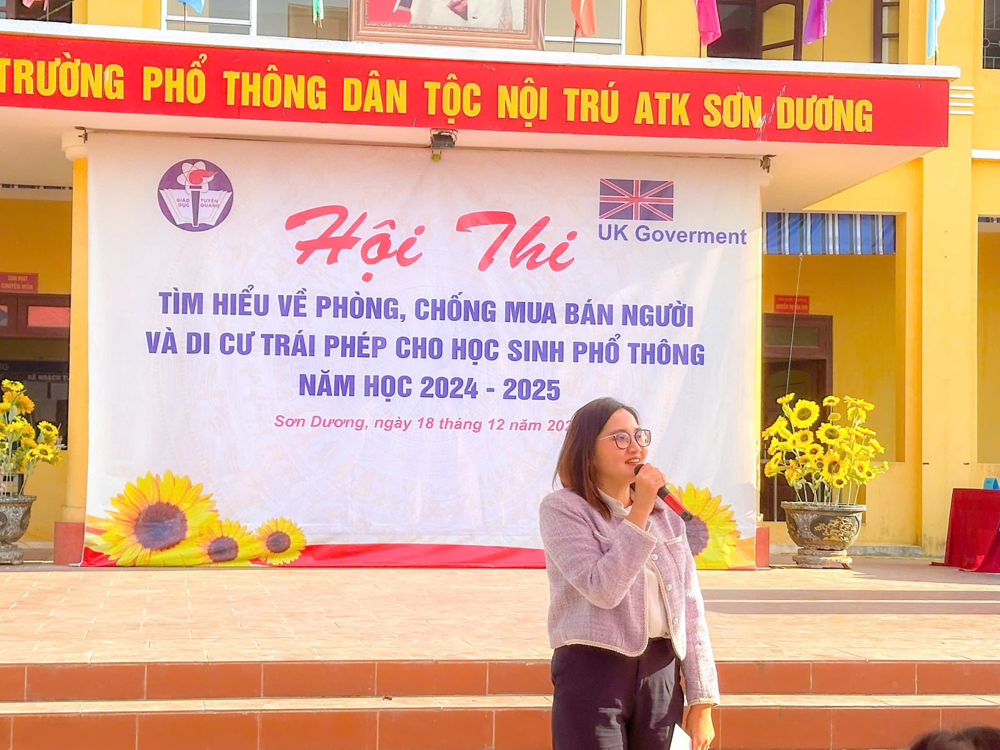

Hội thi “Tìm hiểu về phòng chống mua bán người và di cư trái phép cho học sinh phổ thông năm học 2024-2025” tại trường PTDTNT ATK Sơn Dương
Ngày 18/12/2024 Trường PTDTNT ATK Sơn Dương tổ chức hội thi “Tìm hiểu về phòng chống mua bán người và di cư trái phép cho học sinh phổ thông năm học 2024-2025”. Hội thi diễn ra với nhiều hoạt động ý nghĩa, góp phần nâng cao nhận thức của cán bộ, giáo viên và học sinh về phòng chống mua bán người, di cư trái phép và các quy định của Đảng, chính sách, pháp luật của Nhà nước về phòng chống mua bán người và di cư trái phép. Qua đó, giảm thiểu hành vi di cư trái phép và ngăn chăn các hành vi buôn bán người.
Đến dự với hội thi có Đại biểu Đại sứ quán Vương quốc Liên hiệp Anh và Bắc Ai-len: Bà Jane Parrott – Trưởng đại diện Cục hợp tác quốc tế, Bộ Nội vụ Anh tại Việt Nam; Bà Đặng Thị Vân Hà, quản lí chương trình; ông Vũ Anh Tuấn – đồng sáng lập Học viện Tranh biện và hùng biện Việt Nam, Giảng viên Tranh biện; Đại biểu Sở Giáo dục và Đào tạo tỉnh Tuyên Quang có bà Bàn Thị Kim Thanh – chuyên viên; Ông Tô Trí Tuệ đại biểu Sở Lao động, Thương binh và Xã hội; Đại biểu Công an huyện Sơn Dương và công an xã Minh Thanh. Về phía nhà trường có đồng chí Lương Việt Đức- Bí thư Chi bộ, hiệu trưởng; đồng chí Trịnh Xuân Bảo - Phó Bí thư Chi bộ, phó hiệu trưởng nhà trường; đồng chí Nguyễn Thị Vân Anh - phó hiệu trưởng nhà trường và toàn thể cán bộ giáo viên nhân viên, học sinh nhà trường.
Mở đầu Hội thi được bắt đầu bằng các tiết mục văn nghệ do cô giáo Lý Hải Vân cùng đội xung kích nhà trường biểu diễn. Các tiết mục văn nghệ đã mang đến không khí hào hứng, phấn khởi và sự thành công cho hội thi.
Tiếp theo Bà Jane Parrott – Trưởng đại diện Cục hợp tác quốc tế, Bộ Nội vụ Anh tại Việt Nam lên phát biểu: Bà nêu lên hậu quả của mua bán người và di cư trái phép và bà cũng chỉ rõ ý nghĩa của Hội thi nhằm tuyên truyền, góp phần nâng cao nhận thức của cán bộ, giáo viên và học sinh về phòng chống mua bán người, di cư trái phép.

Hội thi gồm 4 đội đến từ các em học sinh khối 10, khối 11. Các đội thi phải trải qua 03 phần thi: Chào hỏi; Trả lời nhanh và Tranh biện. Với phần thi Chào hỏi, các đội đã trình diễn những tiết mục hết sức ấn tượng, thể hiện tài năng cũng như sự sáng tạo ở chính các em học sinh.
Đặc biệt, phần thi Trả lời nhanh và Tranh biện, các đội thể hiện năng lực, kiến thức về phòng chống mua bán người và di cư trái phép một cách sâu sắc, để lại nhiều ấn tượng trong lòng người xem. Đặc biệt, các đội đã chuyển tải đến người xem những thông điệp ý nghĩa về phòng chống mua bán người, di cư an toàn.
Thông qua Hội thi, giáo viên và học sinh đã được tuyên truyền, phổ biến giáo dục các chủ trương chính sách của Đảng và Nhà nước về xuất khẩu lao động, những rủi ro, âm mưu thủ đoạn của các tổ chức đưa người di cư trái phép. Đồng thời tăng cường công tác phối hợp, phát hiện và xử lý các vụ việc đưa người di cư trái phép tại địa phương; giúp cho người dân, học sinh chúng ta cảnh giác hơn với những thủ đoạn lừa gạt để có những quyết định đúng đắn, không mạo hiểm mạng sống và tiền bạc của mình để di cư trái phép. Từ đó góp phần thực hiện kế hoạch phòng chống tội phạm, tệ nạn xã hội.

Kết thúc Hội thi, ban tổ chức đã trao giải Nhất cho đội thi của lớp 10B, giải Nhì thuộc về đội thi của lớp 11B và đồng giải Ba thuộc về hai đội thi 10A, 11A.
Hội thi thực sự là một trong những hoạt động tuyên truyền thiết thực được Sở giáo dục và đào tạo tổ chức nhằm trang bị cho học sinh các kiến thức cơ bản trong phòng, chống mua bán người và di cư an toàn; nâng cao ý thức trách nhiệm, năng lực nhận biết âm mưu, phương thức thủ đoạn, tác hại của loại tội phạm mua bán người và di cư trái phép. Qua đó, tạo chuyển biến mạnh mẽ về nhận thức, ý thức, trách nhiệm của học sinh; khắc phục những nguyên nhân, điều kiện làm nảy sinh tội phạm, giảm nguy cơ mua bán người; giúp các em học sinh toàn trường nâng cao kiến thức, kỹ năng về phòng chống mua bán người, từ đó, góp phần xây dựng môi trường sống an toàn, trong sạch, lành mạnh!